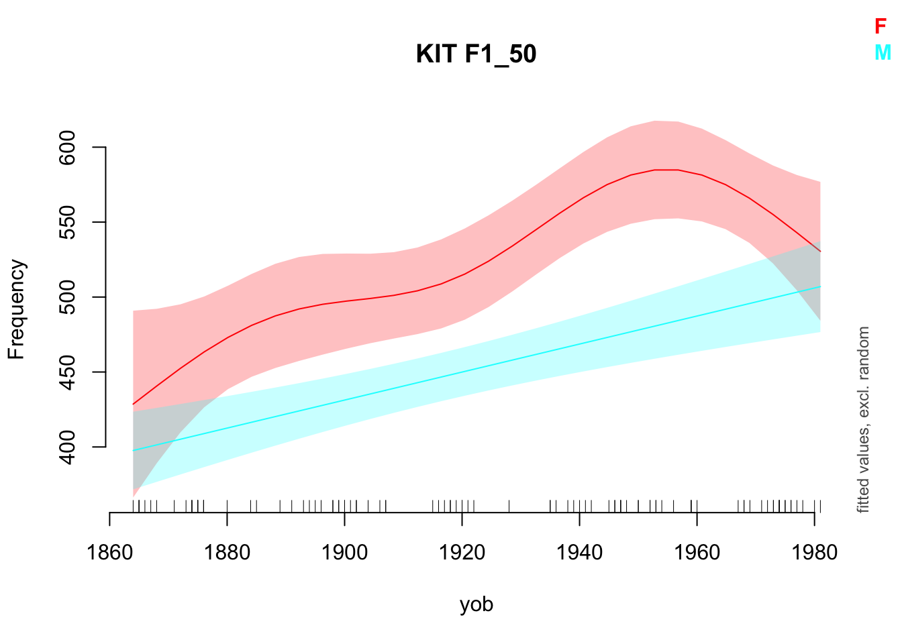
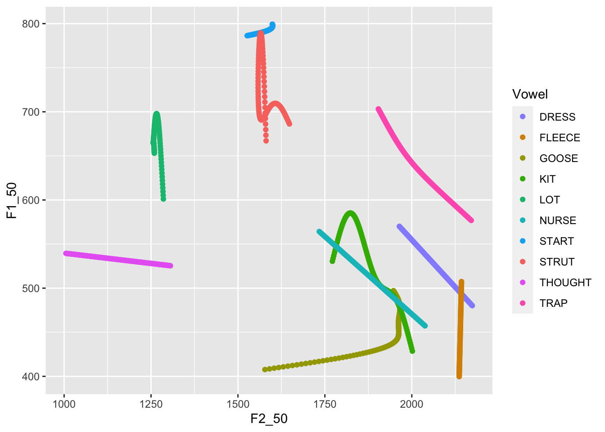
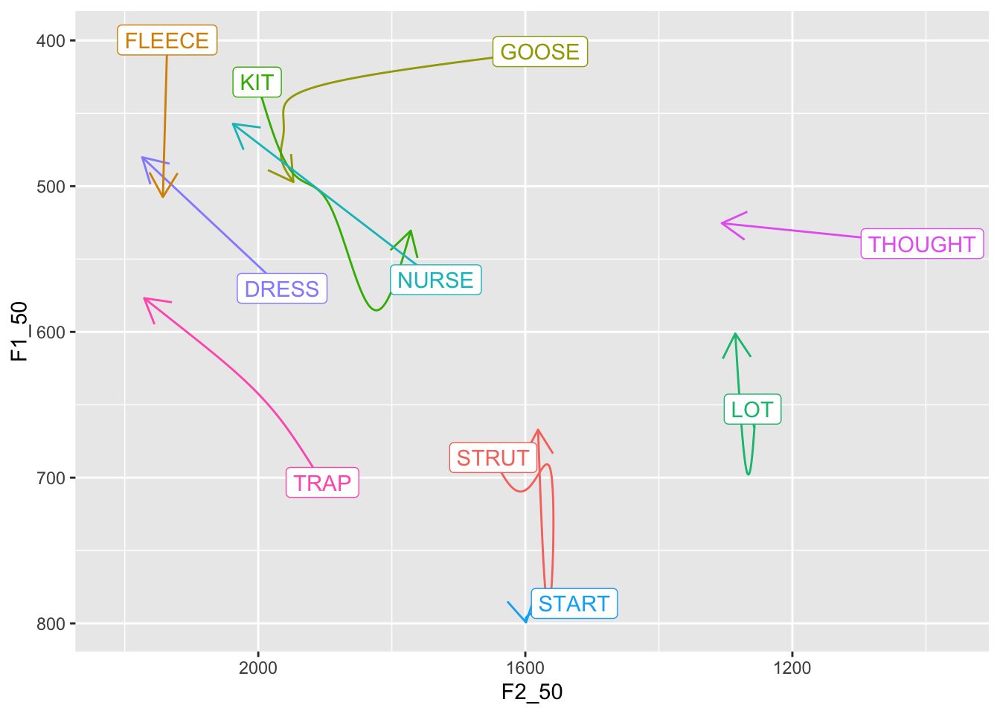

Multiple recent projects at NZILBB have used Generalised Mixed Models (GAMMs) to investigate changes in vowel spaces both across multiples speakers and within single speakers.
In such projects, it is useful to visualise changes to vowel spaces over time with both static plots and animations.
This post sets out a structure for fitting models of the first and second formants of a series of vowels and for visualising them together within vowel space diagrams.
This general structure, and some specific code for visualisation, was originally developed by James Brand for Brand et al. (2021).
I’ll assume the reader knows something about vowels and vowel spaces, the basics of data manipulation with dplyr, and setting up models in R.
# Load tidyverse and friends.library(tidyverse)library(gganimate)# mgcv will be used for fitting gamms later and itsadug for visualisationlibrary(mgcv)library(itsadug)# kable for displaying the dataset.library(kableExtra)vowels <-read_rds('anon_ONZE_mean_sample.rds')vowels %>%head(10) %>%kable() %>%kable_styling(font_size =11) %>%scroll_box(width ="100%")
Speaker
Vowel
F1_50
F2_50
Speech_rate
Gender
yob
CC_f_020
DRESS
622.5797
1897.986
4.9264
F
1936
CC_f_020
FLEECE
518.7458
1882.763
4.9264
F
1936
CC_f_020
GOOSE
524.0606
1944.152
4.9264
F
1936
CC_f_020
KIT
646.8214
1790.054
4.9264
F
1936
CC_f_020
LOT
735.3438
1262.969
4.9264
F
1936
CC_f_020
NURSE
534.8571
1912.714
4.9264
F
1936
CC_f_020
START
888.3929
1604.750
4.9264
F
1936
CC_f_020
STRUT
831.9661
1511.373
4.9264
F
1936
CC_f_020
THOUGHT
594.5000
1051.571
4.9264
F
1936
CC_f_020
TRAP
637.8667
1816.833
4.9264
F
1936
In this dataset each row is a vowel token, with columns:
F1_50 and F2_50: F1 and F2, taken at the midpoint measured in Hz,
Vowel: Wells lexical set labels for New Zealand English monophthongs,
yob: participant year of birth (our time variable),
Speech_rate: the average speech rate of the participant across the recording (a control variable),
Speaker: a code indicating which speaker the token comes from (sometimes useful as a random effect), and
Gender: the gender of the speaker (in this case, an M/F binary).
In any real research project, you will need to engage in a lot of data exploration here. Do you have good data coverage? Is there evidence of outliers in the data? Does the data need to be normalised? This is the time to ask this kind of question. The answers will, of course, depend on your research questions. For this post, the only point of this data is to illustrate a method for modelling and visualising. We can skip these questions!
We will now fit separate models for the F1 and F2 of each vowel. Rather than using a big for loop, or fitting each model with a separate line of code, we will use the purrr method of nesting our data so that we have a row for each of the models we want to fit, fit the models, and then unnest to produce data which can be used to visualise our model. We nest, we mutate, and we unnest. This is a common pattern with purrr.
Before we nest, we need to slightly modify our data. Rather than having a column for our F1 data and a column for our F2 data, we want to capture there in rows. That is, we need our table to be longer. There will then be two rows for each token, one for the F1 and one for the F2.
To do this, we use the trusty dplyr function pivot_longer():
vowels <- vowels %>%pivot_longer(cols = F1_50:F2_50, # Select the columns to turn into rows.names_to ="Formant", # Name the column to indicate if data is F1 or F2,values_to ="Frequency" )vowels %>%head(10) %>%kable() %>%kable_styling(font_size =11) %>%scroll_box(width ="100%")
Speaker
Vowel
Speech_rate
Gender
yob
Formant
Frequency
CC_f_020
DRESS
4.9264
F
1936
F1_50
622.5797
CC_f_020
DRESS
4.9264
F
1936
F2_50
1897.9855
CC_f_020
FLEECE
4.9264
F
1936
F1_50
518.7458
CC_f_020
FLEECE
4.9264
F
1936
F2_50
1882.7627
CC_f_020
GOOSE
4.9264
F
1936
F1_50
524.0606
CC_f_020
GOOSE
4.9264
F
1936
F2_50
1944.1515
CC_f_020
KIT
4.9264
F
1936
F1_50
646.8214
CC_f_020
KIT
4.9264
F
1936
F2_50
1790.0536
CC_f_020
LOT
4.9264
F
1936
F1_50
735.3438
CC_f_020
LOT
4.9264
F
1936
F2_50
1262.9688
As the table above shows, we now have a column indicating whether a frequency value is an F1 or an F2 reading.
Nest
We now nest the data. We do this by grouping the data by the columns which identify the models we want to fit. In this case, we fit an F1 and an F2 model for each vowel. So the columns we need to identify our models are Vowel and Formant. Once we’ve grouped, we simply use the function nest().
The output above shows that we now have a three column data frame (or, in tidyverse speak, a tibble), with the familiar columns Vowel and Formant and a new column data. The column data contains tibbles which live inside our tibble. That is, nested tibbles. These contain the data which we will use to model each vowel and formant separately.
Mutate (and Map)
We can perform actions on the tibbles in the data column by using mutate (just as we would modify other data in a tibble). In this case we will create a column to store our models. The basic structure will look something like this.
vowels <- vowels %>%mutate(model =#??? )
The question marks can be filled in with the map() function. This enables us to apply a function to fit a model to each of our nested tibbles.
So, what will this function look like? This is not the place for a tutorial on GAMs (for which, go here). We will fit a model which predicts formant frequency from the gender of each participant, their year of birth, and their average speech rate. One way to implement this structure in mgcv is with the formula Frequency ~ Gender + s(yob, by=Gender) + s(Speech_rate).
This structure will be the same for all of our nested tibbles. The only thing that will change is the data fed in to it. In this kind of case, we can use ~ to turn our model expression into a function and .x as a pronoun for the nested tibbles. Let’s see what this look like and then explain further:
vowels <- vowels %>%mutate(model =map( data, # We are applying a function to the entries of the `data` column.# This is the function we are applying (introduced with a ~)~bam( # Here's our formula. Frequency ~ Gender +s(yob, by=Gender, k=5) +s(Speech_rate, k=5),data = .x, # Here's our pronoun.# Then some arguments to speed up the model fit.method ='fREML',discrete =TRUE,nthreads =2 ) ) )
The function bam is one of the main functions for fitting GAMM models in mgcv. It is often used for large data sets. Our use of ~ creates a function which is applied to each of our nested tibbles. The entries in model are created by taking the corresponding tibble in the data column and applying the function to it. The tibble is referred to by the pronoun .x in the function. In the above, .x is used as the data fed to bam(). So, for the row of our tibble with DRESS and F1_50 in the Vowel and Formant columns, the entry for model will be a model produced from the data for dress and F1.
Note that you can use any modelling function you like here. The general strategy of nesting and fitting models doesn’t have any special connections with GAMs or mgcv. You could fit a linear model with lm or a generalised linear model using the lme4 package.
We now have GAMM models for each of these vowels. These are stored in the model column we have just created. We can check out one of these models using the itsadugplot_smooth() function as follows:
plot_smooth( vowels$model[[7]], # Pick the first entry in the model column.view ="yob", # The x-axis variable. plot_all ="Gender",main=paste(vowels$Vowel[[7]], vowels$Formant[[7]]))
Summary:
* Gender : factor; set to the value(s): F, M.
* yob : numeric predictor; with 30 values ranging from 1864.000000 to 1981.000000.
* Speech_rate : numeric predictor; set to the value(s): 4.5118.
* NOTE : No random effects in the model to cancel.

Figure 1: Smooth plot for KIT F1
Figure 1 shows a well known feature of the development of New Zealand English: the centralisation of the kit vowel. It also indicates something to keep in mind when fitting non-linear models. The wiggles in the smooth for the female speakers might simply be over fitting our particular sample. Again, this is illustrative of a general pattern, each step of which requires criticism in practice!
For the purpose of visualisation, we want predictions from our model to plot. To do this, we map again. This time, we use the itsadug function get_predictions() instead of the mgcv function bam(), but the underlying idea is the same. The function get_predictions() needs us to tell it what values we want predictions for. In this case, we want predictions for the full range of years of birth in our data set (1864-1981) and for both genders.
The following code stores the values we want predictions for in the to_predict object and then creates a prediction column using mutate() and map():
to_predict <-list("yob"=seq(from=1864, to=1981, by=1), # All years"Gender"=c("M", "F")) # BTW: Get prediction will just assume the average value for any predictors not# mentioned (in this case, Speech_rate).vowels <- vowels %>%mutate(prediction =map( model, # This time we're applying the function to all the models.# We again introduce the function with '~', and indicate where the model # goes with '.x'.~get_predictions(model = .x, cond = to_predict, print.summary =FALSE) ) )
As expected, we get a predicted value for each gender in each of the years spanned by the data.
Unnest
In order to visualise the predictions of our models, we need to unnest this data set. We will do this in a slightly non-standard way, by making a new unnested tibble at this stage rather than modifying our original tibble again. But the same principles apply.
In this case, we need to select our identifying variables (Vowel and Formant) and the column with the data we want access to in a non-nested form (for us, prediction). We unnest as follows:
Our tibble now has our predicted values along with the Vowel and Formant information which identifies which model they came from.
Note that we have now thrown away our individual speaker information. This is often the case when visualising models of this sort as we are not interested in predicting the speech of this or that particular speaker in our data set. Rather, we want to say something about NZE speech in general.
We are now in a position to visualise changes in the overall NZE vowel space.
Visualise Model Predictions as a Vowel Space
We first produce a static plot using a standard ggplot approach and then produce an animation using gganimate.
We begin by defining a colour scheme (following Brand et al. (2021), again). These use html colour codes (plenty of explanations are available online).
We also need to reverse our previous use of pivot_longer(). Why? Well vowel spaces have F1 as the y-axis and F2 as the x-axis. This requires F1 and F2 to be distinct columns. To do this, we use pivot_wider(). This is made easier if we remove the columns we will not use for plotting first.
The plot we eventually produce is quite complex. Let’s start with depicting the data in two-dimensions using points and only plotting the female speakers.
predictions %>%# Filter so only female speakers are plotted.filter( Gender =="F" ) %>%ggplot(aes(x = F2_50,y = F1_50,colour = Vowel ) ) +# Add the pointsgeom_point() +# Change the colours for the vowels to match those defined above.scale_colour_manual(values = vowel_colours)

This is the wrong way around for a vowel plot. So we reverse the x and y axes.
It’s also unclear which direction these changes are occurring. We need to swap out geom_point() for something directed. In this case, we use geom_path() and arrow().
We can add labels to the start of each arrow and remove the legend. This is found by some to be a more clear vowel plot. To do this, we have to pick out the first observation of each vowel in a new tibble. This prevents us from labelling every point on the line.
first_obs <- predictions %>%group_by(Vowel, Gender) %>%slice(which.min(yob))predictions %>%filter( Gender =="F" ) %>%ggplot(aes(x = F2_50,y = F1_50,colour = Vowel,label = Vowel # Add label to the aesthetics. ) ) +geom_path(arrow =arrow(length =unit(5, "mm")),show.legend =FALSE# Remove legend ) +geom_label(# Note filtering as we are only dealing with female speakers now.data = first_obs %>%filter(Gender =="F"), show.legend =FALSE# Again remove legend. ) +# Often need to use 'expansion' here to fit in 'THOUGHT'scale_x_reverse(expand =expansion(add =100)) +scale_y_reverse() +scale_colour_manual(values = vowel_colours)

We can use the faceting functions to plot both male and female data. We use the facet_grid() function. NB: this requires us to remove the filter() functions from the above.
There are still a few shortcomings here. We have overlap of the labels, which are now a little large. We attempt to fix this, while also adding a call to labs() to properly label the plot.
This figure is a good starting point for the kind of smaller adjustments needed to produce a good vowel space visualisation. In your own cases, a lot will depend on the specifics of the models and how much change is being depicted. In this case, it would be nice to make some of these lines a little less messy. Some of the problems here, for instance, the messy lines for start and strut in the male speakers, suggest that our models might be behaving a strangely. This is not a problem for this illustration, but some model criticism would be required in a real research project!
Animation
One problem with the static plot is that we can’t see variation in the rate of change (if any exists). Nor can we figure out, for any point on the line (apart from the start and end) which year it represents. This can be fixed with the gganimate package.
We use the gganimate function transition_reveal() at the end of our plot with yob as the variable we animate with. Our geom_label(), the text with the vowel name, will be the main item we animate. The labels will move around the vowel space over time. We change our geom_path() so that it has no arrows and simply traces where the label of the vowel moves.
We add a caption to our labs() in which we reference the gganimate variable frames_along. This allows us to show what year it is. Finally, a call to theme() lets us make this caption larger.
predictions %>%ggplot(aes(x = F2_50,y = F1_50,colour = Vowel,label = Vowel ) ) +geom_path(show.legend =FALSE) +# NB: our labels just use the predictions dataframe now, so no need for the# 'data = ' line.geom_label( show.legend =FALSE,size =2.5, alpha =0.7 ) +scale_x_reverse(expand =expansion(add =200)) +scale_y_reverse() +scale_colour_manual(values = vowel_colours) +facet_grid(cols =vars(Gender) ) +labs(title ="Vowel Space Change in NZE (yob: 1864-1981)",x ="First Formant (Hz)",y ="Second Formant (Hz)",caption ='Year of Birth: {round(frame_along, 0)}' ) +theme(plot.caption =element_text(size =14, hjust =0) ) +transition_reveal(along = yob)
So there is it: a general structure for fitting models to visualise changes in vowel formants over time, and for plotting them within vowel space diagrams.
As I’ve noted multiple times above, the details will matter at every step in a real research project. Data quality assessment before modelling, sensible model structures, evaluation of model quality, and careful consideration of exactly what needs to be visualised are all necessary.
References
Brand, James & Hay, Jen & Clark, Lynn & Watson, Kevin & Sóskuthy, Márton. 2021. Systematic co-variation of monophthongs across speakers of New Zealand English. Journal of Phonetics. 88. 101096. Retrieved from https://www.sciencedirect.com/science/article/pii/S0095447021000711
Reuse
CC-BY-SA-4.0
Citation
BibTeX citation:
@online{wilsonblack2022,
author = {WilsonBlack, Joshua},
title = {Visualising {Vowel} {Space} {Change} with {GAMMs}},
series = {Linguistics Methods Hub},
date = {2022-10-28},
url = {https://lingmethodshub.github.io/content/R/animated_vowel_plots_tutorial},
doi = {10.5281/zenodo.7261966},
langid = {en}
}
---title: Visualising Vowel Space Change with GAMMsauthor: - name: "Joshua Wilson Black" url: "https://joshua.wilsonblack.nz/" affiliations: - "New Zealand Institute of Language, Brain and Behaviour, University of Canterbury"date: '2022-10-28'license: "CC-BY-SA-4.0"format: html: default pdf: defaulteditor: markdown: wrap: 72bibliography: references.bibimage: "index_files/figure-html/unnamed-chunk-19-1.gif"twitter-card: image: "index_files/figure-html/unnamed-chunk-18-1.png"open-graph: image: "index_files/figure-html/unnamed-chunk-18-1.png"---## IntroductionMultiple recent projects at[NZILBB](https://www.canterbury.ac.nz/nzilbb/) have used [GeneralisedMixed Models(GAMMs)](https://en.wikipedia.org/wiki/Generalized_additive_model) toinvestigate changes in vowel spaces both across multiples speakers andwithin single speakers.In such projects, it is useful to visualise changes to vowel spaces overtime with both static plots and animations.This post sets out a structure for fitting models of the first andsecond formants of a series of vowels and for visualising them togetherwithin vowel space diagrams.This general structure, and some specific code for visualisation, wasoriginally developed by James Brand for @brand2021.I'll assume the reader knows something about vowels and vowel spaces,the basics of data manipulation with `dplyr`, and setting up models inR.## Fitting Multiple Models with `purrr` and `mgcv`### SetupWe're going to fit these models with a small subset of the data from the[Origins of New Zealand English(ONZE)](https://www.canterbury.ac.nz/nzilbb/research/onze/) corpus. Thisdataset contains first and second formant data for 100 speakers of NewZealand English (for details see [supplementaries for Brand et al.2021](https://osf.io/q4j29/)). The data can be found[here](anon_ONZE_mean_sample.rds){target="_blank"}.For the purposes of this post any similar data set would be fine. Weneed:- first and second formant data,- a range of vowels (we'll only look at monophthongs here),- a time variables (whether year of birth, age category, or time through recording), and- any variables you wish to control for.Let's [load the libraries](renv.lock){target="_blank"} we will use andhave a look at the data.``` r# Load renv environmentrenv::use(lockfile ="renv.lock")``````{r}#| include: falserenv::use(lockfile ="renv.lock")``````{r}#| message: false# Load tidyverse and friends.library(tidyverse)library(gganimate)# mgcv will be used for fitting gamms later and itsadug for visualisationlibrary(mgcv)library(itsadug)# kable for displaying the dataset.library(kableExtra)vowels <-read_rds('anon_ONZE_mean_sample.rds')vowels %>%head(10) %>%kable() %>%kable_styling(font_size =11) %>%scroll_box(width ="100%")```In this dataset each row is a vowel token, with columns:- `F1_50` and `F2_50`: F1 and F2, taken at the midpoint measured in Hz,- `Vowel`: Wells lexical set labels for New Zealand English monophthongs,- `yob`: participant year of birth (our time variable),- `Speech_rate`: the average speech rate of the participant across the recording (a control variable),- `Speaker`: a code indicating which speaker the token comes from (sometimes useful as a random effect), and- `Gender`: the gender of the speaker (in this case, an `M`/`F` binary).In any real research project, you will need to engage in a lot of dataexploration here. Do you have good data coverage? Is there evidence ofoutliers in the data? Does the data need to be normalised? This is thetime to ask this kind of question. The answers will, of course, dependon your research questions. For this post, the only point of this datais to illustrate a method for modelling and visualising. We can skipthese questions!We will now fit separate models for the F1 and F2 of each vowel. Ratherthan using a big `for` loop, or fitting each model with a separate lineof code, we will use the `purrr` method of *nesting* our data so that wehave a row for each of the models we want to fit, fit the models, andthen *unnest* to produce data which can be used to visualise our model.**We nest, we mutate, and we unnest.** This is a common pattern with`purrr`.Before we nest, we need to slightly modify our data. Rather than havinga column for our F1 data and a column for our F2 data, we want tocapture there in *rows*. That is, we need our table to be *longer*.There will then be two rows for each token, one for the F1 and one forthe F2.To do this, we use the trusty `dplyr` function `pivot_longer()`:```{r}vowels <- vowels %>%pivot_longer(cols = F1_50:F2_50, # Select the columns to turn into rows.names_to ="Formant", # Name the column to indicate if data is F1 or F2,values_to ="Frequency" )vowels %>%head(10) %>%kable() %>%kable_styling(font_size =11) %>%scroll_box(width ="100%")```As the table above shows, we now have a column indicating whether afrequency value is an F1 or an F2 reading.### NestWe now nest the data. We do this by grouping the data by the columnswhich identify the models we want to fit. In this case, we fit an F1 andan F2 model for each vowel. So the columns we need to identify ourmodels are `Vowel` and `Formant`. Once we've grouped, we simply use thefunction `nest()`.```{r}vowels <- vowels %>%group_by(Vowel, Formant) %>%nest()vowels```The output above shows that we now have a three column data frame (or,in tidyverse speak, a tibble), with the familiar columns `Vowel` and`Formant` and a new column `data`. The column `data` contains tibbleswhich live *inside* our tibble. That is, *nested* tibbles. These containthe data which we will use to model each vowel and formant separately.### Mutate (and Map)We can perform actions on the tibbles in the `data` column by using`mutate` (just as we would modify other data in a tibble). In this casewe will create a column to store our models. The basic structure willlook something like this.```{r}#| eval: falsevowels <- vowels %>%mutate(model =#??? )```The question marks can be filled in with the `map()` function. Thisenables us to apply a function to fit a model to each of our nestedtibbles.So, what will this function look like? This is not the place for atutorial on GAMs (for which, go[here](https://arxiv.org/abs/1703.05339)). We will fit a model whichpredicts formant frequency from the gender of each participant, theiryear of birth, and their average speech rate. One way to implement thisstructure in `mgcv` is with the formula`Frequency ~ Gender + s(yob, by=Gender) + s(Speech_rate)`.This structure will be the same for *all* of our nested tibbles. Theonly thing that will change is the data fed in to it. In this kind ofcase, we can use `~` to turn our model expression into a function and`.x` as a pronoun for the nested tibbles. Let's see what this look likeand then explain further:```{r}vowels <- vowels %>%mutate(model =map( data, # We are applying a function to the entries of the `data` column.# This is the function we are applying (introduced with a ~)~bam( # Here's our formula. Frequency ~ Gender +s(yob, by=Gender, k=5) +s(Speech_rate, k=5),data = .x, # Here's our pronoun.# Then some arguments to speed up the model fit.method ='fREML',discrete =TRUE,nthreads =2 ) ) )```The function `bam` is one of the main functions for fitting GAMM modelsin `mgcv`. It is often used for large data sets. Our use of `~` createsa function which is applied to each of our nested tibbles. The entriesin `model` are created by taking the corresponding tibble in the `data`column and applying the function to it. The tibble is referred to by thepronoun `.x` in the function. In the above, `.x` is used as the data fedto `bam()`. So, for the row of our tibble with `DRESS` and `F1_50` inthe `Vowel` and `Formant` columns, the entry for `model` will be a modelproduced from the data for [dress]{.smallcaps} and F1.Note that you can use any modelling function you like here. The generalstrategy of nesting and fitting models doesn't have any specialconnections with GAMs or `mgcv`. You could fit a linear model with `lm`or a generalised linear model using the `lme4` package.We now have GAMM models for each of these vowels. These are stored inthe `model` column we have just created. We can check out one of thesemodels using the `itsadug``plot_smooth()` function as follows:```{r}#| label: fig-smooth-plot#| fig-cap: "Smooth plot for KIT F1"#| message: falseplot_smooth( vowels$model[[7]], # Pick the first entry in the model column.view ="yob", # The x-axis variable. plot_all ="Gender",main=paste(vowels$Vowel[[7]], vowels$Formant[[7]]))```@fig-smooth-plot shows a well known feature of the development of NewZealand English: the centralisation of the [kit]{.smallcaps} vowel. Italso indicates something to keep in mind when fitting non-linear models.The wiggles in the smooth for the female speakers might simply be overfitting our particular sample. Again, this is illustrative of a generalpattern, each step of which requires criticism in practice!For the purpose of visualisation, we want predictions from our model toplot. To do this, we map again. This time, we use the `itsadug` function`get_predictions()` instead of the `mgcv` function `bam()`, but theunderlying idea is the same. The function `get_predictions()` needs usto tell it what values we want predictions for. In this case, we wantpredictions for the full range of years of birth in our data set(1864-1981) *and* for both genders.The following code stores the values we want predictions for in the`to_predict` object and then creates a `prediction` column using`mutate()` and `map()`:```{r}to_predict <-list("yob"=seq(from=1864, to=1981, by=1), # All years"Gender"=c("M", "F")) # BTW: Get prediction will just assume the average value for any predictors not# mentioned (in this case, Speech_rate).vowels <- vowels %>%mutate(prediction =map( model, # This time we're applying the function to all the models.# We again introduce the function with '~', and indicate where the model # goes with '.x'.~get_predictions(model = .x, cond = to_predict, print.summary =FALSE) ) )```So what does a tibble of predictions look like?```{r}vowels$prediction[[1]] %>%head() %>%kable() %>%kable_styling() %>%scroll_box(width ="100%")```As expected, we get a predicted value for each gender in each of theyears spanned by the data.### UnnestIn order to visualise the predictions of our models, we need to *unnest*this data set. We will do this in a slightly non-standard way, by makinga new unnested tibble at this stage rather than modifying our originaltibble again. But the same principles apply.In this case, we need to select our identifying variables (`Vowel` and`Formant`) and the column with the data we want access to in anon-nested form (for us, `prediction`). We unnest as follows:```{r}predictions <- vowels %>%select( Vowel, Formant, prediction ) %>%unnest(prediction)predictions %>%head() %>%kable() %>%kable_styling() %>%scroll_box(width ="100%")```Our tibble now has our predicted values along with the `Vowel` and`Formant` information which identifies which model they came from.Note that we have now thrown away our individual speaker information.This is often the case when visualising models of this sort as we arenot interested in predicting the speech of this or that particularspeaker in our data set. Rather, we want to say something about NZEspeech *in general*.We are now in a position to *visualise* changes in the overall NZE vowelspace.## Visualise Model Predictions as a Vowel SpaceWe first produce a static plot using a standard `ggplot` approach andthen produce an animation using `gganimate`.We begin by defining a colour scheme (following @brand2021, again).These use html colour codes (plenty of explanations are availableonline).```{r}vowel_colours <-c(DRESS ="#9590FF",FLEECE ="#D89000",GOOSE ="#A3A500",KIT ="#39B600",LOT ="#00BF7D",NURSE ="#00BFC4",START ="#00B0F6",STRUT ="#F8766D",THOUGHT ="#E76BF3",TRAP ="#FF62BC")```We also need to reverse our previous use of `pivot_longer()`. Why? Wellvowel spaces have F1 as the *y*-axis and F2 as the *x*-axis. Thisrequires F1 and F2 to be distinct columns. To do this, we use`pivot_wider()`. This is made easier if we remove the columns we willnot use for plotting first.```{r}predictions <- predictions %>%select( # Remove unneeded variables-Speech_rate,-CI ) %>%pivot_wider( # Pivotnames_from = Formant,values_from = fit )predictions %>%head() %>%kable() %>%kable_styling() %>%scroll_box(width ="100%")```### Static PlotThe plot we eventually produce is quite complex. Let's start withdepicting the data in two-dimensions using points and only plotting thefemale speakers.```{r}predictions %>%# Filter so only female speakers are plotted.filter( Gender =="F" ) %>%ggplot(aes(x = F2_50,y = F1_50,colour = Vowel ) ) +# Add the pointsgeom_point() +# Change the colours for the vowels to match those defined above.scale_colour_manual(values = vowel_colours)```This is the wrong way around for a vowel plot. So we reverse the *x* and*y* axes.```{r}predictions %>%filter( Gender =="F" ) %>%ggplot(aes(x = F2_50,y = F1_50,colour = Vowel ) ) +geom_point() +scale_x_reverse() +scale_y_reverse() +scale_colour_manual(values = vowel_colours)```It's also unclear which direction these changes are occurring. We needto swap out `geom_point()` for something directed. In this case, we use`geom_path()` and `arrow()`.```{r}predictions %>%filter( Gender =="F" ) %>%ggplot(aes(x = F2_50,y = F1_50,colour = Vowel ) ) +geom_path(arrow =arrow(length =unit(5, "mm"))) +scale_x_reverse() +scale_y_reverse() +scale_colour_manual(values = vowel_colours)```We can add labels to the start of each arrow and remove the legend. Thisis found by some to be a more clear vowel plot. To do this, we have topick out the first observation of each vowel in a new tibble. Thisprevents us from labelling *every* point on the line.```{r}first_obs <- predictions %>%group_by(Vowel, Gender) %>%slice(which.min(yob))predictions %>%filter( Gender =="F" ) %>%ggplot(aes(x = F2_50,y = F1_50,colour = Vowel,label = Vowel # Add label to the aesthetics. ) ) +geom_path(arrow =arrow(length =unit(5, "mm")),show.legend =FALSE# Remove legend ) +geom_label(# Note filtering as we are only dealing with female speakers now.data = first_obs %>%filter(Gender =="F"), show.legend =FALSE# Again remove legend. ) +# Often need to use 'expansion' here to fit in 'THOUGHT'scale_x_reverse(expand =expansion(add =100)) +scale_y_reverse() +scale_colour_manual(values = vowel_colours)```We can use the faceting functions to plot both male and female data. Weuse the `facet_grid()` function. **NB**: this requires us to remove the`filter()` functions from the above.```{r}predictions %>%ggplot(aes(x = F2_50,y = F1_50,colour = Vowel,label = Vowel ) ) +geom_path(arrow =arrow(length =unit(5, "mm")),show.legend =FALSE ) +geom_label(data = first_obs, show.legend =FALSE ) +scale_x_reverse(expand =expansion(add =250)) +scale_y_reverse() +scale_colour_manual(values = vowel_colours) +facet_grid(cols =vars(Gender) )```There are still a few shortcomings here. We have overlap of the labels,which are now a little large. We attempt to fix this, while also addinga call to `labs()` to properly label the plot.```{r}predictions %>%ggplot(aes(x = F2_50,y = F1_50,colour = Vowel,label = Vowel ) ) +geom_path(arrow =arrow(length =unit(2.5, "mm")), # Make arrows smallershow.legend =FALSE ) +geom_label(data = first_obs, show.legend =FALSE,size =2.5, # Make labels smaller...alpha =0.7# ...and slightly transparent. ) +scale_x_reverse(expand =expansion(add =200)) +# less expanasion needed.scale_y_reverse() +scale_colour_manual(values = vowel_colours) +facet_grid(cols =vars(Gender) ) +labs(title ="Vowel Space Change in NZE (yob: 1864-1981)",x ="First Formant (Hz)",y ="Second Formant (Hz)" )```This figure is a good starting point for the kind of smaller adjustmentsneeded to produce a good vowel space visualisation. In your own cases, alot will depend on the specifics of the models and how much change isbeing depicted. In this case, it would be nice to make some of theselines a little less messy. Some of the problems here, for instance, themessy lines for [start]{.smallcaps} and [strut]{.smallcaps} in the malespeakers, suggest that our models might be behaving a strangely. This isnot a problem for this illustration, but some model criticism would berequired in a real research project!### AnimationOne problem with the static plot is that we can't see variation in therate of change (if any exists). Nor can we figure out, for any point onthe line (apart from the start and end) which year it represents. Thiscan be fixed with the[`gganimate`](https://gganimate.com/articles/gganimate.html) package.We use the `gganimate` function `transition_reveal()` at the end of ourplot with `yob` as the variable we animate with. Our `geom_label()`, thetext with the vowel name, will be the main item we animate. The labelswill move around the vowel space over time. We change our `geom_path()`so that it has no arrows and simply traces where the label of the vowelmoves.We add a caption to our `labs()` in which we reference the `gganimate`variable `frames_along`. This allows us to show what year it is.Finally, a call to `theme()` lets us make this caption larger.```{r}#| message: false#| warning: falsepredictions %>%ggplot(aes(x = F2_50,y = F1_50,colour = Vowel,label = Vowel ) ) +geom_path(show.legend =FALSE) +# NB: our labels just use the predictions dataframe now, so no need for the# 'data = ' line.geom_label( show.legend =FALSE,size =2.5, alpha =0.7 ) +scale_x_reverse(expand =expansion(add =200)) +scale_y_reverse() +scale_colour_manual(values = vowel_colours) +facet_grid(cols =vars(Gender) ) +labs(title ="Vowel Space Change in NZE (yob: 1864-1981)",x ="First Formant (Hz)",y ="Second Formant (Hz)",caption ='Year of Birth: {round(frame_along, 0)}' ) +theme(plot.caption =element_text(size =14, hjust =0) ) +transition_reveal(along = yob)```So there is it: a general structure for fitting models to visualisechanges in vowel formants over time, and for plotting them within vowelspace diagrams.As I've noted multiple times above, the details will matter at everystep in a real research project. Data quality assessment beforemodelling, sensible model structures, evaluation of model quality, andcareful consideration of exactly what needs to be visualised are allnecessary.